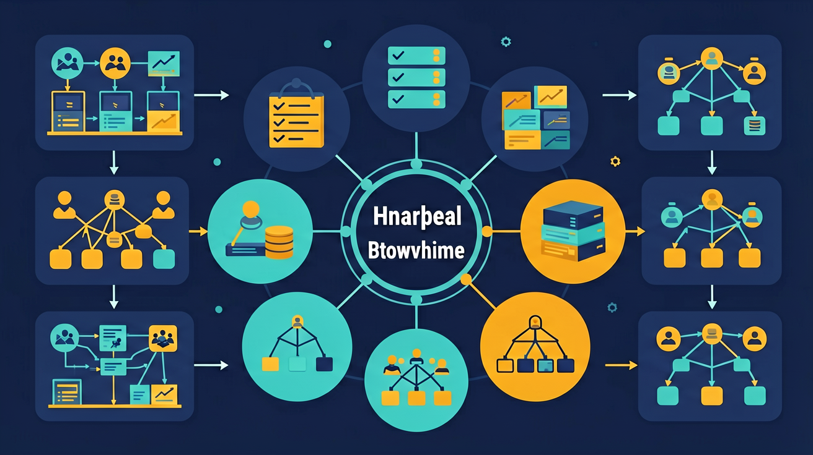

Worked Example
过程图：对照示例，把方法的每一步落到实处。
示例推理：从真实任务到程序模型
浏览器后退功能用栈实现：1) 访问页面A→B→C时依次压入栈[A,B,C]；2) 点击后退时弹出C，栈顶变为B；3) 再次后退弹出B，栈顶变为A。栈顶指针始终指向当前页面，LIFO特性确保按反向顺序返回。用Python代码表示为：stack.push(url)和stack.pop()实现操作，时间复杂度均为O(1)。
为什么同一批数据，换一种组织方式，程序效率和思路都会改变？

已经知道：学生在Python课程中已掌握列表的append/pop操作，体验过Excel表格的行列增删，理解网页导航的返回功能（栈的雏形）
但问题是：难以区分栈和队列的进出规则差异（如浏览器后退vs打印队列），不理解树结构中父节点与子节点的双向指针实现，对图的邻接矩阵存储方式感到抽象
所以学：校园快递站要管理包裹入库、排队取件、楼层分类和路线推荐，不同任务需要不同结构。
选择后，AI 学伴会围绕你的卡点给提示。
浏览器后退功能最接近哪种结构？
规范定义：数据结构是指数据元素之间的组织方式，决定访问、插入、删除和查找的策略。
机制解释：列表适合顺序访问，栈后进先出，队列先进先出，树表达层级，图表达网络关系。
观察浏览器后退按钮如何按打开顺序反向返回页面
分析栈的LIFO特性如何通过push和pop操作实现
栈顶始终指向最后插入的数据项，确保后进先出
用栈结构处理函数调用时的内存分配与返回
列表像书架，栈像盘子堆，队列像排队，树像目录，图像地铁线路。
真实复杂度：数组按下标访问 O(1) 但中间插入要搬移 O(n)；链表访问要顺链找 O(n) 但插入只需改指针 O(1)。
💡 探究任务：调数据规模 n，对比四种操作的代价，解释为什么“频繁随机读取选数组、频繁插删选链表”。
把所有问题都塞进列表，忽略了后进先出、先进先出或层级关系。
只看表面语法，没检查前提和数据流。
先问变量是什么，再问规则是否成立。
浏览器后退功能用栈实现：1) 访问页面A→B→C时依次压入栈[A,B,C]；2) 点击后退时弹出C，栈顶变为B；3) 再次后退弹出B，栈顶变为A。栈顶指针始终指向当前页面，LIFO特性确保按反向顺序返回。用Python代码表示为：stack.push(url)和stack.pop()实现操作，时间复杂度均为O(1)。
列表像书架，栈像盘子堆，队列像排队，树像目录。 请把本课方法迁移到一个新的校园场景：选课、借书、门禁或成绩查询。你的方案至少写出三个部分：数据从哪里来，规则如何处理，结果怎样被检查。如果发现结果异常，要能回到变量和规则重新诊断。

视频回顾本课主线：真实场景、概念定义、变量模型、迁移应用。
下列哪种结构能高效实现‘最近浏览记录’功能？
为“浏览器后退、食堂排队、文件夹目录、地铁换乘”分别选择数据结构。
提交后会检查是否包含变量、规则和结果。
列举栈的两种核心操作（push/pop）并说明执行位置
分析微信消息列表为何用队列实现（需考虑新消息进入与旧消息淘汰机制）
设计二叉树存储家谱关系，说明如何实现'查找某人所有子孙'操作
设计停车场管理系统时，若要求车辆按到达顺序离开，应选用哪种数据结构？
先独立作答，再点选项查看对错与错因。
快递站临时存放退货包裹的区域最适合用什么数据结构？
下列哪项是图的典型应用场景？
用二叉树组织包裹分类检索时，根节点应是：
快递站常规取件采用____结构确保先到的包裹先被取走
答案：队列
队列的先进先出(FIFO)特性符合公平性原则
在树结构中，没有子节点的末端元素称为____
答案：叶子节点
树形结构的末端节点类比植物叶子
关于栈的特性描述正确的是：
比较列表、队列、二叉树三种结构处理2000件包裹的耗时
❓ 为什么栈叫'后进先出'，不能改成'先进后出'吗？
❓ 树和图到底有什么区别？不都是连来连去的吗？
❓ 队列在现实生活中有啥用？排队买奶茶也算吗？
学完这一课，这些问题你都能自信地回答。
✅ 动态演示栈顶指针随push/pop上下移动
💡 混淆了内存地址增长方向与栈增长方向
✅ 用家族关系类比（度=子女数，高度=代际数）
💡 对层级概念理解不完整